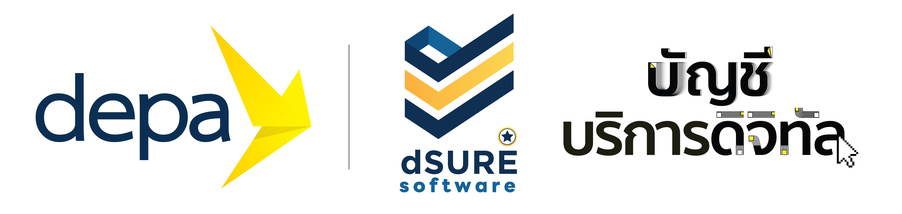

แพลตฟอร์มข้อมูลเมืองที่เริ่มจากสิ่งที่ อปท. ของคุณต้องการจริง
One city data platform, shaped with the first ten municipalities — from base maps to the people who live on them.
CityMETER วางฐานข้อมูลเมืองของท้องถิ่น — ขอบเขตชุมชน ถนน อาคาร สถานที่สำคัญ ประชากร และพิกัดที่กองต่าง ๆ ใช้งานจริง — CityChat พาข้อมูลนั้นไปถึงเจ้าหน้าที่หน้างานและคนในพื้นที่ ให้เห็นเมืองเดียวกันและลงมือจากหลักฐานชุดเดียวกัน แต่ละ อปท. เริ่มจากโจทย์ของตัวเอง ไม่ใช่จากเมนูสำเร็จรูป
สำหรับองค์กรปกครองส่วนท้องถิ่นทั่วประเทศ · ปีงบประมาณ 2569
ใช้ CityMETER และ CityChat ฟรี 1 ปี ภายใต้การสนับสนุนของ depa
บริษัท แลนโดมิเตอร์ จำกัด เปิดให้ อปท. ใช้แพลตฟอร์มข้อมูลเมืองและการจัดการภัยพิบัติโดยไม่มีค่าใช้จ่าย 1 ปีเต็ม มูลค่ากว่า 250,000 บาท
- โครงการ
- ยกระดับโครงสร้างพื้นฐานคลาวด์เพื่อเมืองอัจฉริยะท้องถิ่น ประจำปีงบประมาณ พ.ศ. 2569
- ผู้สนับสนุน
- สำนักงานส่งเสริมเศรษฐกิจดิจิทัล (depa)
- เงื่อนไข
- สิทธิ์ให้แก่หน่วยงานภาครัฐที่เข้าร่วมโครงการ ผ่านผู้ประกอบการดิจิทัลที่ขึ้นทะเบียนบัญชีบริการดิจิทัล Thailand Digital Catalog

สิ่งที่ อปท. ได้ภายใน 12 เดือน
สรุปจากสิ่งที่ 4 อปท. แรกเขียนไว้ในหนังสือแสดงความจำนง
- ฐานข้อมูลเมืองบนแผนที่ (GIS) ไม่ต่ำกว่า 5 ชุด — ขอบเขตชุมชนดิจิทัล เส้นทางคมนาคม อาคาร (Building Footprint) สถานที่สำคัญ และประชากร
- แดชบอร์ดผู้บริหาร (City Dashboard) รวมข้อมูลจากหลายกองไว้ที่เดียว ใช้วางแผน จัดสรรงบ และตอบเหตุได้ตรงจุด
- พิกัดครัวเรือนและกลุ่มเปราะบาง — ผู้สูงอายุ ผู้พิการ ผู้ป่วยติดเตียง — ที่นำไปช่วยเหลือและเข้าถึงสิทธิได้ทันเวลา
- จุดเสี่ยงภัยและเรื่องแจ้งจากประชาชน บันทึกลงแผนที่พร้อมผู้รับผิดชอบและสถานะที่ติดตามได้
- อบรมเจ้าหน้าที่ ให้ใช้งานและวิเคราะห์ข้อมูลได้เอง อย่างน้อย 1 รอบ (ไม่ต่ำกว่า 20 คน)
อปท. ที่ลงนามหนังสือแสดงความจำนงแล้ว · ปีงบประมาณ 2569
4 เทศบาล 4 โจทย์ ฐานข้อมูลเดียวกัน
เราตั้งใจรับทุกความต้องการของ 10 อปท. แรก เพื่อหาว่าแพลตฟอร์มข้อมูลเมืองที่ "พอดี" กับท้องถิ่นไทยหน้าตาเป็นอย่างไร ทุกเทศบาลเริ่มจากฐานข้อมูล 5 ชุดเดียวกัน แล้วต่อยอดไปตามโจทย์ของพื้นที่
ฝั่งเจ้าหน้าที่ · CityMETER For Organization · ระบบจริงของเทศบาลเมืองแสนสุข
หลังบ้านที่เจ้าหน้าที่เห็น: ทะเบียนทรัพย์สินของเมืองบนแผนที่ชุมชน
แต่ละชั้นข้อมูลอ่านได้รายชุมชน — จำนวน ความหนาแน่น สัดส่วนตามยี่ห้อหรือผิวทาง — พร้อมกำกับเสมอว่าข้อมูลมาจากทะเบียนใด ส่งออกเมื่อไร และยังบอกอะไรไม่ได้
CityScan · ตัวอย่างวิดีโอ
เก็บข้อมูลจากถนนจริง ให้ทะเบียนของเมืองทันปัจจุบัน
CityScan คือขั้นสำรวจภาคสนามของ CityMETER — บันทึกตำแหน่งและสภาพทรัพย์สินของเมืองระหว่างเดินทางในพื้นที่ แล้วส่งเข้าทะเบียนเดียวกับที่เจ้าหน้าที่เห็นบนหน้าจอด้านบน ทำให้ข้อมูลที่ อปท. ใช้ตัดสินใจไม่หยุดอยู่ที่วันที่ส่งออกครั้งล่าสุด
เมื่อนำข้อมูลไปคุยกับคนในละแวก CityChat เริ่มจากสามคำถามที่ตอบได้จากชีวิตจริง: แถวนี้น่าอยู่ยังไง น่าเที่ยวตรงไหน และน่าค้าขายอะไรดี
เบราว์เซอร์นี้เล่นไฟล์วิดีโอตัวอย่างไม่ได้
ดาวน์โหลดวิดีโอ CityScan (MP4)เมืองเดียวกัน สองมุมมอง
เจ้าหน้าที่ไม่ได้ต้องการข้อมูลเพิ่มเฉย ๆ แต่ต้องการข้อมูลที่ช่วยให้งานสำเร็จง่ายขึ้น ชาวบ้านไม่ได้ต้องการแค่ช่องทางแจ้ง แต่ต้องการเห็นว่าเสียงของเขาถูกเห็นและถูกใช้จริง CityChat ออกแบบมาเพื่อทั้งสองฝ่ายจากข้อมูลชุดเดียวกัน
ห้าสิ่งที่ CityChat สัญญาจะช่วย
เห็น → เข้าใจ → ช่วยตอบ → ทำงานต่อ → เห็นผลและจำได้ ทุกขั้นเริ่มจากพื้นที่จริงและหลักฐานที่มีที่มา
ข้อมูลที่เมืองเห็น กับเสียงที่คนในพื้นที่เล่า อยู่ที่เดียวกัน
หนึ่งพื้นที่เล่าได้หนึ่งเรื่อง: มีสัญญาณอะไร หลักฐานบอกและยังไม่บอกอะไร ควรถามอะไรต่อ และทำอะไรได้หนึ่งอย่าง ส่วนเสียงของคนในพื้นที่อยู่ข้างกัน — แยกจากข้อมูลและสถานะทางการอย่างชัดเจน โดยไม่มีฝ่ายไหนสำคัญน้อยกว่า
ซอยเทศบาล 12 · 90 วันที่ผ่านมา
หลังฝนตก ซอยนี้มีคนแจ้งน้ำขังบ่อยกว่าซอยรอบข้าง
4 เรื่องใน 90 วัน จากเรื่องที่ประชาชนแจ้ง ข้อมูลยังบอกไม่ได้ว่าน้ำขังนานแค่ไหน หรือจุดระบายน้ำใดเป็นสาเหตุ
- ที่มา
- เรื่องที่ประชาชนแจ้ง 4 ครั้ง / 90 วัน · ปรับปรุง 28 สิงหาคม 2026
- ขอบเขต
- เฉพาะถนนในความรับผิดชอบของเทศบาล
- ข้อจำกัด
- ไม่รวมท่อระบายน้ำของกรมทางหลวง และไม่มีข้อมูลระดับน้ำวัดจริง
- ผู้รับผิดชอบ
- กองช่าง · รับเรื่อง 29 สิงหาคม 2026
คำถามถึงคนในซอย: หลังฝนหยุด น้ำในซอยลดภายในหนึ่งชั่วโมงไหม
ช่วยตอบคำถามนี้เสียงจากคนในพื้นที่ · ไม่ใช่สถานะทางการ · เห็นได้เฉพาะผู้แจ้งและเจ้าหน้าที่ที่รับผิดชอบ
น้ำยังไม่ลดตั้งแต่เช้า รถเล็กผ่านไม่ได้ครับ
ผู้แจ้ง · 28 สิงหาคม 2026 08:12
บันทึกไว้กับเรื่องนี้แล้ว กองช่างจะเข้าตรวจจุดระบายน้ำวันนี้ และจะแจ้งสิ่งที่พบกลับในห้องนี้
เจ้าหน้าที่กองช่าง · 28 สิงหาคม 2026 09:40
โจทย์ที่ อปท. นำมาก่อน
จากหนังสือแสดงความจำนง 4 ฉบับแรก ภัยพิบัติยังเป็นจุดเริ่มร่วม แต่ทุกเทศบาลต่อยอดไปคนละทาง แต่ละเรื่องมีภาพจำของตัวเองพร้อมคำกำกับเสมอ ภาพไม่เคยทำงานแทนคำ